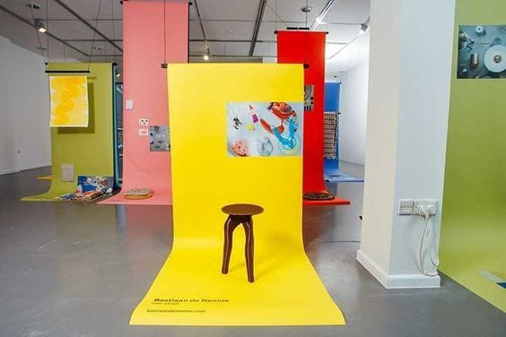
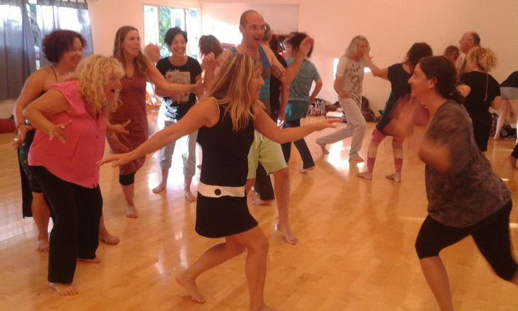
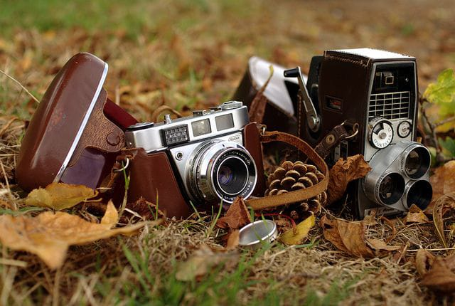
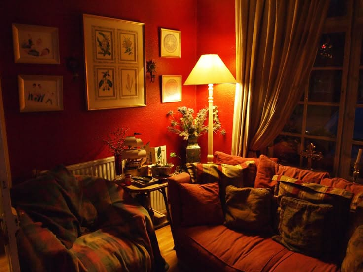

01 Primavera
Taller de Arte
En primavera, explorá el color y las formas a través de distintas técnicas artísticas. Conocé el recorrido del taller y encontrá tu manera de crear.
Más información
01 Primavera
En primavera, explorá el color y las formas a través de distintas técnicas artísticas. Conocé el recorrido del taller y encontrá tu manera de crear.
Más información
02 Verano
En verano, el cuerpo encuentra nuevos ritmos y formas de expresarse. Sumate a un espacio para bailar, explorar y compartir movimiento.
Más información
03 Otoño
El otoño invita a observar la luz, los paisajes y sus cambios. Aprendé fotografía y contá historias desde una mirada propia.
Más información
04 Invierno
En invierno, la música nos reúne y acompaña. Explorá ritmos, instrumentos y sonidos en una propuesta para crear en grupo.
Más información